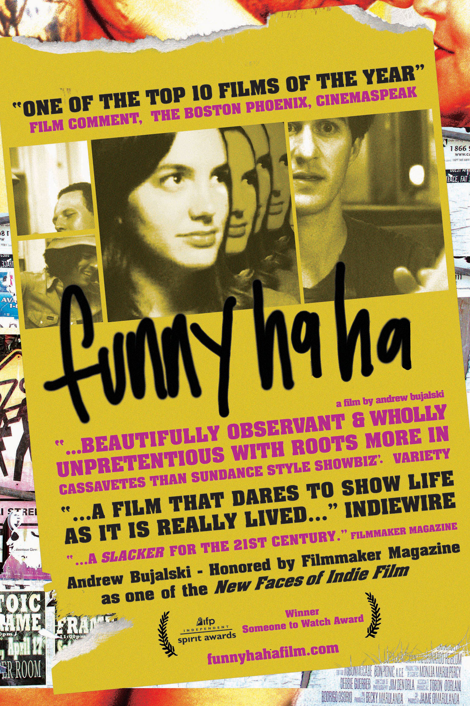
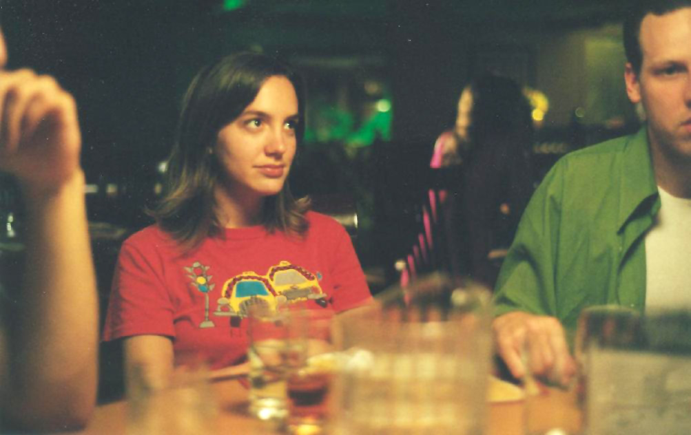

| |
|
|
13. März 2006
"Funny Ha Ha" (US 2002)

Ein kleiner, billiger, äußerst sympatischer und ehrlicher
Slackerfilm. Die junge Heldin gespielt von der phantastischen Kate
Dollenmayer ist auf der Suche nach temporärer Arbeit und einem fixem
Freund - unprätentiös, unzynisch, ohne aufgesetzte Dramaturgie, fast
wie in Cassavetes' legendärem "Shadows",
dem Begründer des Independent Cinemas.
Das Slacker Genre nannte man früher Cinema Verité. Angeblich improvisiert, einfach, billig,
lebensnah. Regisseur Andrew Bujalski erster Film wird in der Tat oft
mit Cassavetes verglichen. Und immer öfter wird nicht mehr bei Richard
Linklater, sondern vor allem nach dem ähnlichen großen "Erfolg" seines
zweiten Films "Mutual Appreciation" wird bei Bujalski die Cassavetes
Karte ausgespielt. Sogar auf Wikipedia. Das hat er in seiner
Bescheidenhait nicht verdient. Jedenfalls gilt er als ein Held des
"echten" US Independent Cinemas, denen Sundance auch schon zu
kommerzialisiert ist.
Marnie is a 23-year-old girl living alone in Boston and facing all of the classic existential challenges of love, work, indulgence, etc. Maintaining humor and dignity to the best of her ability, she ping-pongs between several awkward boy situations and tries to find her footing...
Marnie just graduated from college, drinks likes she's still in school, and is looking for a temp job but a permanent boyfriend. She loves a guy who doesn't love her (?), ping-pongs between awkward romantic alternatives and even less suitable jobs.
“Young people are often not served too well by the movies. Heaps of films are aimed at a young demographic but very few of them deal with things uncynically,” explains the 27-year-old Boston-based Bujalski. “If I can bring something like a documentarian’s eye to a fictional structure then I am happy.”
Evidenced by his 2004 IFP “Someone to Watch” Spirit Award and placing on four Top 10 Films of the Year lists even before getting distribution, Andrew has captured the funny strange moments in life in a way that is also FUNNY HA HA.
“I've been hoping for two years that people who don't write about movies or stalk them at film festivals would get to experience the wonderful vagaries of Andrew Bujalski's Funny Ha Ha… She (Marnie) is one of the most simply complicated movie characters I’ve ever seen… Dollenmayer acts with refreshing understatement, and there’s eloquence in her gracelessness… Funny Ha Ha is a smartly observed, unpretentious, and unconventional comedy of manners… Bujalski’s is one of the first movies to put such sensitive and true characters on screen in all their imperfections. He deserves a good, long career… to ignore him is to ignore the stammering voice of a generation.” - --Wesley Morris, Boston Globe
“Funny Ha Ha is really a joy… You see clichéd phrases like "a genuine original" and "an unforgettable delight" in movie ads every week. Much of the time, this lavish praise only cheats the few films that actually deserve it. For example, films like Andrew Bujalski's charming comedy, which happens to be ... well, see above. Bujalski gets a great deal of help from his star, Kate Dollenmayer, who is so natural, she nearly convinces us that we're watching a documentary… Bujalski celebrates the awkwardness of twentysomething life, allowing Dollenmayer to create a beautifully authentic portrait. Playing her agonizingly graceless suitor, he taps into everyone's inner defeatist with a performance that is excruciating and entertaining. Each stammer, hesitation and nervous laugh reminds us of who we once were, still are or even hope to be.” --Elizabeth Weitzman, New York Daily News
Awards:

2004 Independent Spirit
“Someone to Watch” Award
Four Critic’s Top Ten of Lists
Amy Taubin (Film Comment), Gerald Peary (Boston Phoenix),
Warren Curry (Cinemaspeak.com), Michael Koresky (Film Comment)
One of the “New Faces of Indie Film”
Filmmaker Magazine
Special Jury Prize, Performance by Ensemble Cast
Sidewalk Moving Pictures Festival
Most Promising New Filmmaker Award
Northampton Independent Film Festival
US 2002, B+R: Andrew Bujalski D: Kate Dollenmayer, Christian Rudder,
85min, eng.OF, Ö Premiere
19:30 Uhr, Space04 Kunsthaus Graz, € 5.-